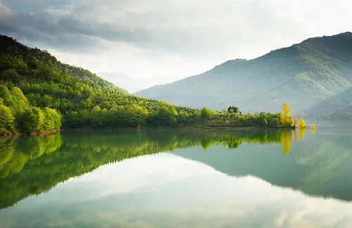
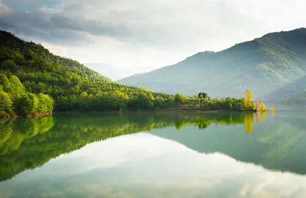

Picture of the Day

Nature Frame is a photo sharing portal. Users can upload and share images beautiful scenery of their native places. In every day an image will be selected as Picture of Day.
Picture of the Day
Gallery
 


User Profiles
Sara
Tommy
Rajesh
Safar
Musthafa
Copy right reserved @ Nature Frame 2024